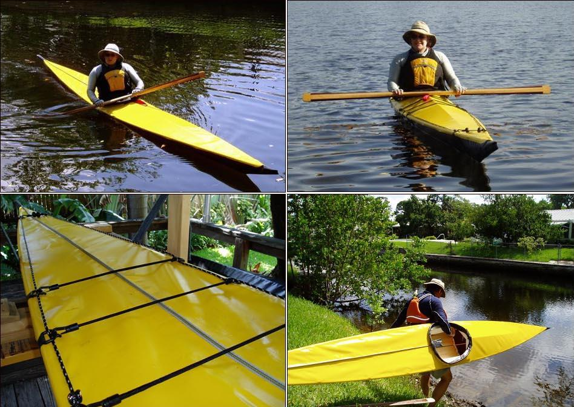

| (New) Sea Ranger by Hastings Read (US) | Menu Previous Page Next Page |
|
 Anne Read from Miami, Florida paddling her newly completed Sea Ranger folder ( 17.6ft X 19.5in). Anne's husband Hastings added internal tensioning cables and a waterproof aft deck zipper. In addition to the Sea Ranger, Hastings earlier completed a Sea Rider. Use the {Back} key to return. |
|